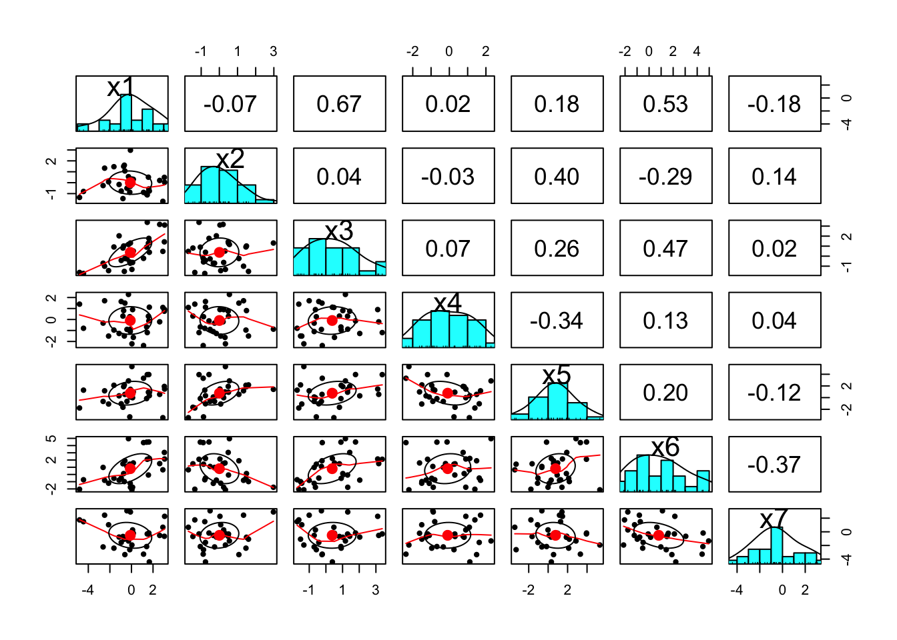
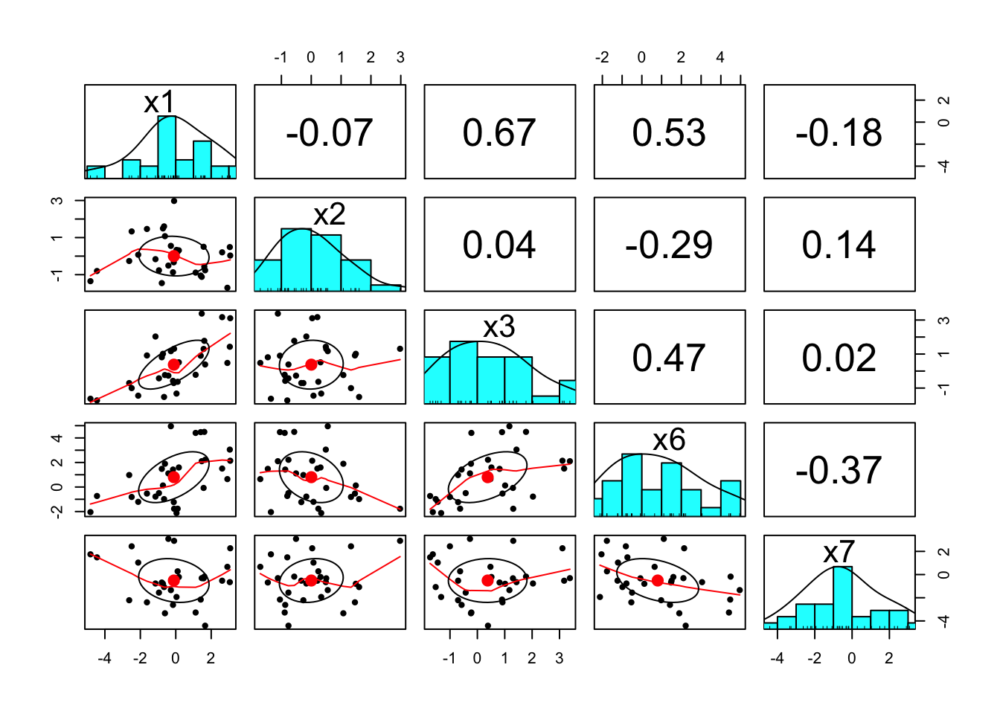
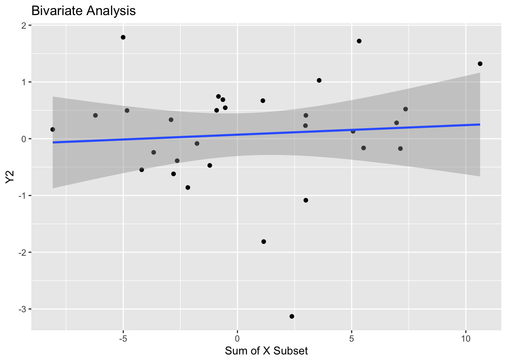
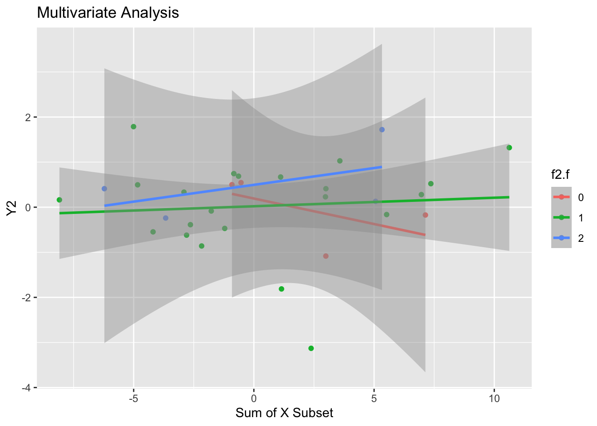
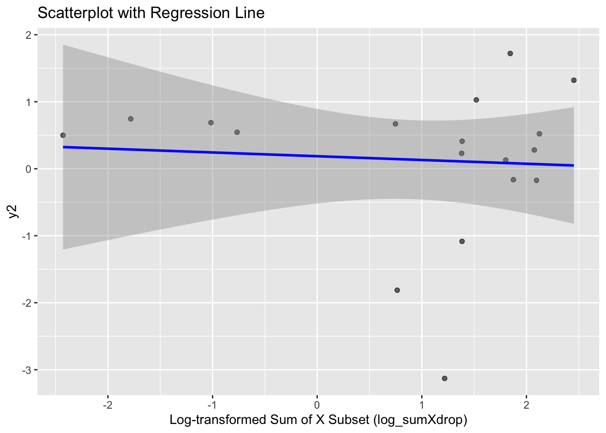

| y1 | y2 | y3 | y4 | x1 | x2 | x3 | x4 | x5 | x6 | x7 | f1 | f2 | f3 | f4 | f5 | f6 | f7 | f8 |
|---|---|---|---|---|---|---|---|---|---|---|---|---|---|---|---|---|---|---|
| 0.18 | 0.69 | 0.08 | 44.76 | -0.79 | -1.45 | 0.81 | 0.31 | -1.65 | 1.48 | -0.69 | 1 | 1 | 3 | 0 | 0 | 0 | 0 | -1 |
| 1.97 | 1.32 | 2.64 | 78.96 | 3.07 | 0.03 | 3.11 | 0.90 | 1.47 | 2.14 | 2.27 | 1 | 1 | 2 | 0 | 1 | 0 | 0 | -1 |
| 0.38 | -0.16 | 0.46 | 185.23 | 1.46 | -1.12 | 3.38 | -1.19 | 3.94 | 2.10 | -0.31 | 1 | 1 | 3 | 0 | 0 | 0 | 0 | -1 |
| -0.21 | -3.13 | -0.46 | 178.47 | 0.17 | 0.31 | 0.51 | -1.63 | 0.98 | 1.59 | -0.21 | 1 | 1 | 5 | 0 | 1 | 0 | 1 | -1 |
| 0.94 | -0.17 | 2.46 | 137.35 | 1.61 | -0.57 | 1.78 | -0.13 | 3.95 | 4.49 | -0.18 | 0 | 0 | 5 | 0 | 0 | 0 | 1 | -1 |
| -0.77 | 0.74 | -1.01 | -2.14 | -1.15 | -0.16 | 2.03 | -1.27 | 0.31 | -0.78 | -0.77 | 0 | 1 | 3 | 0 | 1 | 1 | 1 | -1 |
Module 3 v2
Data Preparation
Reliability analysis
Call: alpha(x = df[, 5:11], check.keys = TRUE)
raw_alpha std.alpha G6(smc) average_r S/N ase mean sd median_r
0.58 0.53 0.67 0.14 1.1 0.11 0.46 0.91 0.13
95% confidence boundaries
lower alpha upper
Feldt 0.30 0.58 0.77
Duhachek 0.37 0.58 0.78
Reliability if an item is dropped:
raw_alpha std.alpha G6(smc) average_r S/N alpha se var.r med.r
x1 0.42 0.36 0.53 0.084 0.55 0.149 0.056 0.116
x2- 0.60 0.58 0.66 0.187 1.38 0.104 0.064 0.179
x3 0.47 0.40 0.54 0.099 0.66 0.132 0.057 0.135
x4 0.63 0.60 0.70 0.202 1.52 0.097 0.067 0.184
x5 0.63 0.59 0.65 0.192 1.43 0.094 0.051 0.135
x6 0.34 0.28 0.47 0.060 0.38 0.173 0.060 0.067
x7- 0.56 0.50 0.66 0.144 1.01 0.108 0.084 0.135
Item statistics
n raw.r std.r r.cor r.drop mean sd
x1 30 0.76 0.74 0.738 0.57 -0.109 2.0
x2- 30 0.20 0.31 0.154 0.03 0.501 1.1
x3 30 0.67 0.68 0.666 0.51 0.376 1.4
x4 30 0.15 0.24 0.031 -0.05 -0.092 1.3
x5 30 0.40 0.29 0.153 0.09 0.759 2.0
x6 30 0.84 0.84 0.865 0.70 0.801 2.1
x7- 30 0.52 0.49 0.327 0.25 1.017 1.9
Reliability analysis
raw_alpha std.alpha G6(smc) average_r S/N ase mean sd median_r
0.58 0.53 0.67 0.14 1.1 0.11 0.46 0.91 0.13
Reliability analysis
Call: alpha(x = df[, c(5, 6, 7, 10, 11)], check.keys = TRUE)
raw_alpha std.alpha G6(smc) average_r S/N ase mean sd median_r
0.67 0.65 0.69 0.27 1.8 0.087 0.37 1.1 0.24
95% confidence boundaries
lower alpha upper
Feldt 0.43 0.67 0.82
Duhachek 0.50 0.67 0.84
Reliability if an item is dropped:
raw_alpha std.alpha G6(smc) average_r S/N alpha se var.r med.r
x1 0.53 0.51 0.54 0.20 1.0 0.123 0.045 0.22
x2- 0.70 0.70 0.72 0.37 2.3 0.089 0.063 0.42
x3 0.61 0.59 0.57 0.26 1.4 0.107 0.029 0.24
x6 0.47 0.44 0.51 0.17 0.8 0.149 0.068 0.10
x7- 0.70 0.67 0.69 0.33 2.0 0.076 0.076 0.38
Item statistics
n raw.r std.r r.cor r.drop mean sd
x1 30 0.78 0.76 0.73 0.57 -0.11 2.0
x2- 30 0.36 0.46 0.22 0.18 0.14 1.1
x3 30 0.65 0.65 0.60 0.46 0.38 1.4
x6 30 0.85 0.83 0.80 0.68 0.80 2.1
x7- 30 0.55 0.52 0.33 0.26 0.65 1.9
Reliability analysis
raw_alpha std.alpha G6(smc) average_r S/N ase mean sd median_r
0.67 0.65 0.69 0.27 1.8 0.087 0.37 1.1 0.24
Data Analysis
Bivariate Analysis (Noise!)
Call:
lm(formula = y2 ~ sumXdrop, data = df)
Residuals:
Min 1Q Median 3Q Max
-3.2414 -0.4017 0.1688 0.5013 1.8008
Coefficients:
Estimate Std. Error t value Pr(>|t|)
(Intercept) 0.07094 0.18376 0.386 0.702
sumXdrop 0.01688 0.04051 0.417 0.680
Residual standard error: 0.9989 on 28 degrees of freedom
Multiple R-squared: 0.006163, Adjusted R-squared: -0.02933
F-statistic: 0.1736 on 1 and 28 DF, p-value: 0.6801
Multivariate Analysis (Nothing upon Nothing)
Call:
lm(formula = y2 ~ x1 + x2 + x3 + x6 + x7, data = df)
Residuals:
Min 1Q Median 3Q Max
-3.11424 -0.39297 0.09322 0.66388 1.51753
Coefficients:
Estimate Std. Error t value Pr(>|t|)
(Intercept) 0.175359 0.217579 0.806 0.428
x1 0.046987 0.134436 0.350 0.730
x2 0.003661 0.186221 0.020 0.984
x3 0.184808 0.187759 0.984 0.335
x6 -0.182070 0.123107 -1.479 0.152
x7 0.026296 0.110425 0.238 0.814
Residual standard error: 1.002 on 24 degrees of freedom
Multiple R-squared: 0.1433, Adjusted R-squared: -0.03519
F-statistic: 0.8028 on 5 and 24 DF, p-value: 0.5587| Variable | VIF |
|---|---|
| x1 | 2.064746 |
| x2 | 1.147261 |
| x3 | 2.102202 |
| x6 | 1.882549 |
| x7 | 1.258623 |
Call:
lm(formula = y2 ~ sumXdrop + f2, data = df)
Residuals:
Min 1Q Median 3Q Max
-3.2488 -0.4855 0.1355 0.6192 1.8233
Coefficients:
Estimate Std. Error t value Pr(>|t|)
(Intercept) -0.23192 0.40478 -0.573 0.571
sumXdrop 0.02093 0.04101 0.510 0.614
f2 0.30060 0.35748 0.841 0.408
Residual standard error: 1.004 on 27 degrees of freedom
Multiple R-squared: 0.03153, Adjusted R-squared: -0.04021
F-statistic: 0.4395 on 2 and 27 DF, p-value: 0.6489| Variable | VIF |
|---|---|
| sumXdrop | 1.013948 |
| f2 | 1.013948 |

Fitting our Model (Better) (But Also Not Really Cause Log Didn’t Do Anything)
Call:
lm(formula = y2 ~ log_sumXdrop + f2, data = df)
Residuals:
Min 1Q Median 3Q Max
-3.2845 -0.1475 0.2595 0.4798 1.3323
Coefficients:
Estimate Std. Error t value Pr(>|t|)
(Intercept) -0.2074 0.5181 -0.400 0.695
log_sumXdrop -0.1337 0.2133 -0.627 0.540
f2 0.5244 0.5272 0.995 0.336
Residual standard error: 1.18 on 15 degrees of freedom
(12 observations deleted due to missingness)
Multiple R-squared: 0.06656, Adjusted R-squared: -0.05789
F-statistic: 0.5348 on 2 and 15 DF, p-value: 0.5965